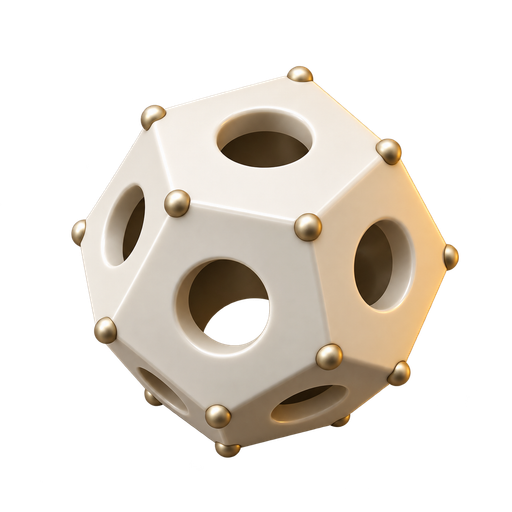
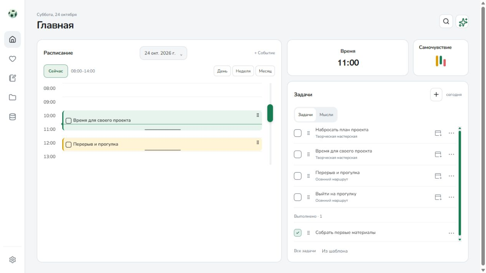
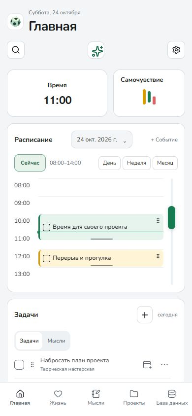
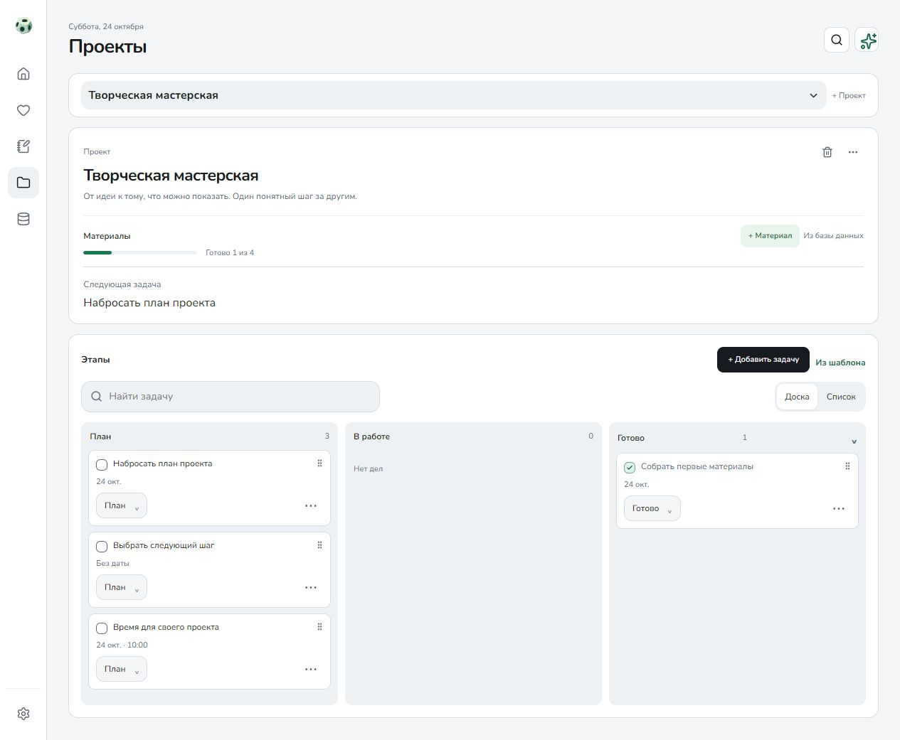

Данные хранятся локально
Основные разделы работают без регистрации в Orvim и без интернета. Задачи и записи хранятся на устройстве.

Orvim Оставить отзывЛичное пространство · Windows и Android
Задачи на сегодня, проекты на будущее и записи о себе. Соберите их в спокойное пространство, к которому хочется возвращаться.
Основные разделы — без аккаунта и интернета.


Планы, проекты и следующий шаг.
Мысли и материалы под рукой.
Сон, питание и самочувствие.
Знакомство с приложением
Не нужно заполнять всё. Начните с того, что полезно именно вам.
Расписание и задачи рядом. Выберите день, запланируйте дело и отметьте то, что уже получилось.
Рассмотреть интерфейсОписание, материалы и задачи проекта собраны вместе. Мысли можно записывать и отдельно, когда они ещё не стали планом.
Рассмотреть интерфейс
Компоновка подстраивается под небольшой экран. Orvim разрабатывается для Windows и Android.
Здесь показана мобильная компоновка в браузере, а не снимок установленного APK.
Рассмотреть интерфейсРеальный интерфейс в браузерном режиме. Все записи на снимках вымышлены.
В центре — ваши данные
Orvim начинается на вашем устройстве. Вы сами выбираете, что подключать дальше.
Основные разделы работают без регистрации в Orvim и без интернета. Задачи и записи хранятся на устройстве.
ИИ, внешние календари и обмен между устройствами подключаются отдельно. У сторонних сервисов могут быть свои аккаунты, условия и оплата.
В настройках есть экспорт и резервные копии. Сохраняйте их отдельно: локальное хранение само по себе не защищает от потери устройства.
Следующий шаг
Публичный выпуск готовится. Пока можно запросить тестовую сборку и рассказать, для чего вы хотите использовать Orvim.
Для спокойной работы за компьютером.
Тестовая сборка · x64Чтобы нужное оставалось под рукой.
Тестовая сборка · ARM64 · Android 7+Заявка откроется в GitHub; для отправки нужен аккаунт. Не включайте личные записи, ключи и пароли.
Страница выпусковДо первого запуска
Аккаунт Orvim не требуется. Основные разделы работают локально. Если вы решите подключить внешний сервис, он может потребовать собственный аккаунт или ключ.
Проекты, заметки, коллекции и личные записи: сон, питание, воду, тренировки, самочувствие и финансы. Можно использовать только те разделы, которые вам подходят.
У Windows и Android отдельные базы. Обмен можно настроить через локальную сеть или WebDAV. Само по себе открытие приложения на втором устройстве не переносит записи.
Нет. Локальная база и обычные экспортированные копии не зашифрованы самим Orvim. Доступ к ним зависит от защиты устройства и места хранения. Делайте копии и храните их там, где доступ есть только у вас.
Приложение ещё развивается: возможны ошибки и изменения интерфейса. Перед обновлением делайте резервную копию. Конкретное описание неудобства помогает улучшить Orvim.
Сделаем удобнее вместе
Расскажите, где запутались, чего не хватило и к чему захотелось вернуться. Именно такие истории помогают выбрать следующий шаг.
Отзывы публикуются в GitHub. Не добавляйте персональные данные.